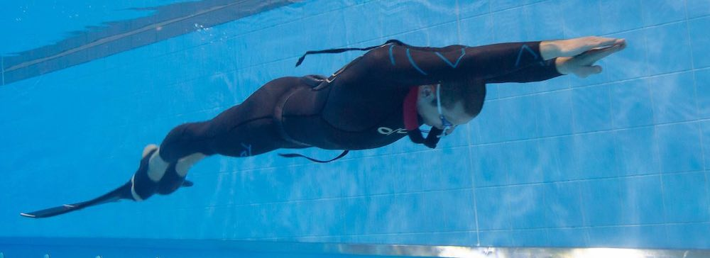
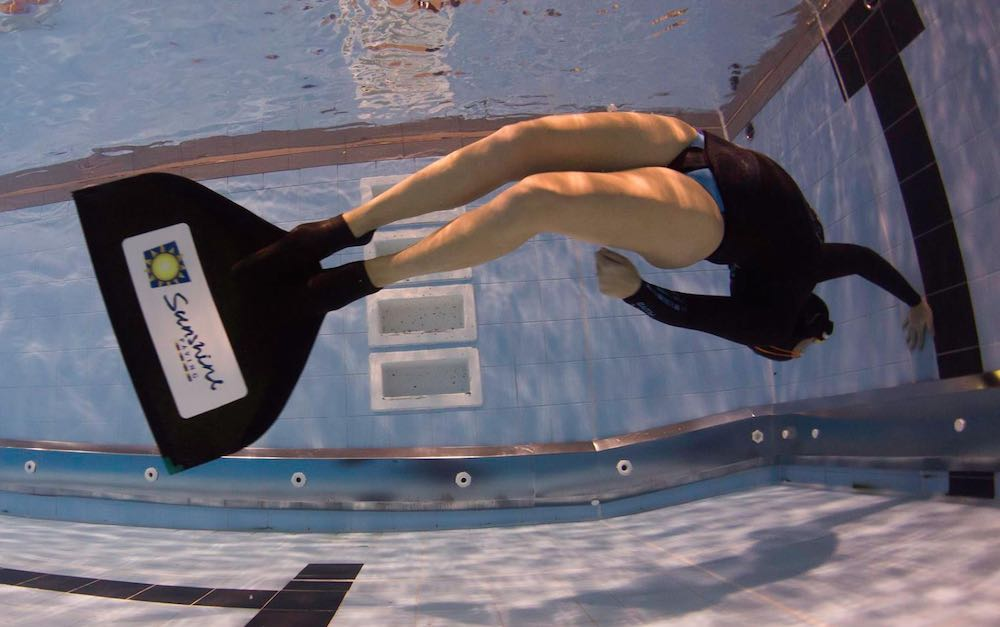

This site does not use cookies. We do not collect any tracking information (e.g., ip addresses) or use any web analytics.
When you submit personal information on this website it is retained by Christchurch Freediving Club. We will only share it with others outside the club if legally obliged to do so. Within the club, your information will only be handled by members of the committee, or club members who have been delegated a task by the committee which requires your personal information. Personal information will be deleted when it is no longer needed.
Our full privacy policy describes in more detail how we handle your personal information.
 